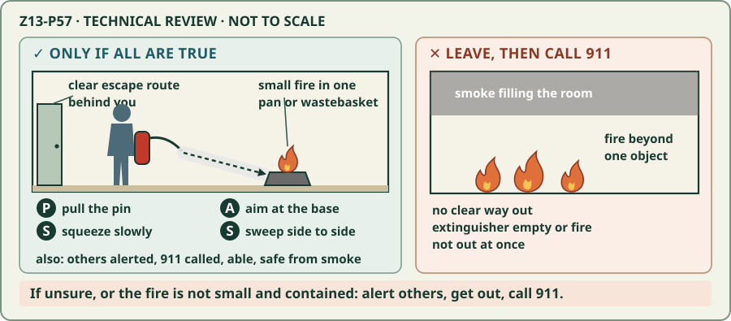

Z13-P57 · Home survival and utilities · New manuscript
Match ABC fire extinguishers to incipient fires and evacuate without delay
Use portable residential extinguishers safely ONLY on tiny contained fires while prioritizing immediate human escape above property.
When it applies · Kitchens, garages, wood-stove areas, and generator fuel-storage perimeters.
Equipment · UL-listed multi-purpose Class ABC dry-chemical fire extinguisher (checked pressure gauge in green) and clear two-exit room escape routes.

Actions
- Keep a UL-listed Class ABC extinguisher mounted near the kitchen exit and heating/utility zones (checking monthly that the gauge needle sits cleanly in the green zone and the pin/nozzle are intact)—NEVER throw water onto a burning kitchen grease pan or energized electrical fire (water explodes burning grease upward!).[U04]
- Evacuate everyone FIRST and call 911; consider using an extinguisher ONLY if the fire is tiny and confined (wastebasket size), your back is squarely toward an unobstructed exit door, smoke is NOT filling the room, and you know PASS (Pull pin, Aim at base, Squeeze handle, Sweep side to side).[U04]
- If the fire does NOT go out immediately with one extinguisher, grows past waist height, or emits thick dark smoke, DROP the extinguisher, close doors behind you if safe to slow spread, get outside, and stay outside.[U04]
Failure recognition · Throwing a pitcher of tap water onto a flaming skillet of cooking oil, or staying inside a smoke-filled hallway trying to fight a spreading room fire.[U04]
Verify · Confirm ABC gauge sits in green, unobstructed exit behind user before any attempt, and household practices two-way escape routes.[U04]
Stop or change course · Smoke banking down from the ceiling, spreading flames, blocked exit, or empty extinguisher mandates instant evacuation and 911 from outside.[U04]
Evidence and editorial notes
- U04 · FEMA / Ready.gov · Home Fires (current web edition)
- Section: Home Fires > Smoke Alarms, Fire Extinguishers, and Escape Plans · Conditions: Residential fire prevention during outages and supplemental heating
Support: Test smoke alarms monthly on every level and outside sleeping areas, keep two exits clear from every room, store fuels outside living spaces in approved containers, and evacuate immediately if a fire exceeds incipient containment.
Limitations: Candles and improvised indoor flames dramatically elevate outage house-fire deaths. · Conflicting evidence: None; integrates with CPSC CO-alarm rules (C09).
Editorial note: Anchors outage fire prevention, fuel storage, and exit readiness in Z13. · Specialist reviewer: Fire prevention and residential safety
Primary source · checked 2026-11-24
Source lineage · FEMA Ready.gov Home Fires; new manuscript · Classification · New manuscript.